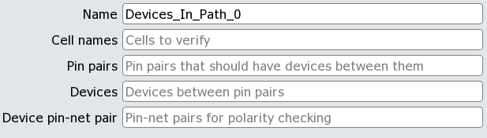

This check optionally verifies the correct net connections to pins of the protection structure, which can be used to check polarity. The protection structure can be a subcircuit or a primitive SPICE device element. A physical layout or netlist is permitted as the input design.
The check verifies whether a protection device exists between pin1 and pin2. The check can also verify whether ppinA is connected to netA and ppinB is connected to netB to guarantee proper polarity. Instances that do not have the correct protection structure appear in the PERC Report.
The rule generator Graphical User Interface fields appear as follows:

The cell names are specified in a whitespace-delimited list.
The pin pairs are specified by net name. There must be at least two pin names specified. The GUI tooltip that appears when you place your cursor over the Pin pairs field discusses various pairing options.
The devices between the pin pairs are specified by name in a whitespace-delimited list.
The pin-net pairs are optional. When specified, there must be at least one pin-net pair, where each pin and net are specified by name in that order.
Results in the PERC Report appear like this:
9 X18/X0(108.500,438.500) [ PADINC ]
PAD: VREF_I
GND: GND
VDD: VDD
Y: 25
No protection device found in PADINC cell between VDD & PAD The instance and cell name appear on the first line, followed by pin names and external net names. The final line indicates which pins lack a protection device between them.
The DFM database can be loaded into Calibre RVE for PERC to view results.
If your rules are configured to run against the source netlist, then you need not use the -ldl command line option for your Calibre PERC run. In this case, a DFM database is not generated. When the ‑ldl option is not used in a source netlist check, the Mask SVDB Directory can be loaded into Calibre RVE instead.
The GUI pane supports the following options in the batch rule generator command perc_ldl::include_check ‑check_options list, which is derived from the perc_netlist::setup_check -check_params option (line breaks are for ease of reading). These options correspond to the GUI fields in the order they appear.
‘{’ -name check_name \ ‑cell_name cell_list \ -pin_pairs [‘{’] ‘{’pin1 pin2 [pinN …]‘}’ [[‘{’pinQ pinR [pinS …]‘}’] … ] [‘}’] \ ‑protection_devices device_list \ [‑pin_net_pairs pin1 net1 [pinN netN …] ‘}’ |
The cell_list is a list of names, possibly using the asterisk (*) wildcard to match zero or more characters, and the question mark wildcard (?) to match one character. The -pin_pairs list specifies the port or pin pairs between which protection devices should exist. The device_list specifies the protection devices to verify. These can be primitive SPICE element names or subcircuit names. The -pin_net_pairs list is used for polarity checking, when desired.
“DEVICES_IN_PATH Netlist Setup Options” for details.